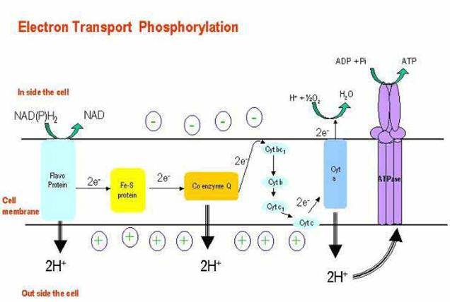
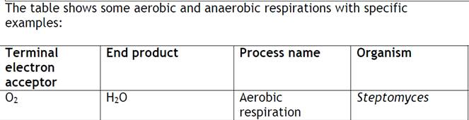

AMBE 101 :: Lecture 05 :: ATP GENERATION

The energy captured within ATP can then be harnessed to create order in the form of biosynthetic reactions. In a hypothetical enzyme reaction that converts substrates A−H and B−OH to A−B and H2 O, the energy from ATP hydrolysis is first used to convert B−OH to a higher-energy intermediate, B−O−PO4. This compound is only transiently formed, with the energy released during its decay used by the enzyme to form A−B. Thus, the energy released from the ATP hydrolysis reaction (large −_G) is coupled to the synthesis reaction (large +_G). In this way, the cell can progressively create order.
Electron transport system (ETS)
- Although cells could transfer electrons directly from NADH to oxygen, this would liberate all energy in NADH directly as heat.
- NADH possesses lots of energy. If electrons are transferred directly to oxygen:
- NADH + O2 NAD + H2O, delta Go' = - 218 kjoules/mole
- If NADH has ~218 kjoules of energy, and it only takes 30.5 kjoules to make one ATP, could conceivably make 218/30.5 = ~ 7 ATP per NADH if energy conversion were 100% efficient.
- In practice, cells have evolved ways to get up to 40% efficiency (~ 3 ATP/NADH) under optimal circumstances.
- Electron transport system (ETS) = membrane-bound pathway transferring electrons from organic molecules to oxygen.
- ETS moves both electrons and protons:electrons are passed from carrier to carrier in the membrane, while protons are moved from inside to outside of membrane
- Net result: electrons enter ETS from carriers like NADH or FADH, wind up at terminal oxidase, get attached to oxygen.
- ETS consists of 4 complexes, connected by mobile carriers (Coenzyme Q, cytochrome c) that shuttle between complexes in membrane

Specific carriers of ETS:
- mitochondria (in eukaryotes): NADH ---> (Flavoprotein Iron sulfur proteins Quinone cytochrome b cytochrome c cytochrome a cytochrome a3 oxygen
- bacteria (prokaryotes) have different ETS carriers, shorter chains. In E. coli, can have two different terminal oxidases, one functions at high oxygen levels, one at lower oxygen levels. Cytochromes involved include: b558, b595, b562, d, and o
- proton gradient and oxidative phosphorylation (oxphos)
Chemiosmotic hypothesis (Peter Mitchell, 1961)
- As electrons flow through ETS, at certain steps protons (H+) are moved from inside to outside of the membrane.
- This builds up proton gradient; since + charges are removed from inside of cell, - charge remains inside, mainly as OH- ions.
- pH just outside membrane can reach 5.5, pH just inside membrane can reach 8.5 ---> difference of 3 pH units, or 1000x concentration differential of H+ across membrane. This represents potential energy stored up in proton gradient = proton motive force.
- Membrane is basically impermeable to protons, so gradient doesn't get squandered away by leaky reentry.
- ATP synthase protein complex contains only channels for proton entry. As protons push in through channel, the base rotates. Specific binding sites allow ADP + Pi ATP. This can be called chemiosmotic phosphorylation (assuming chemiosmotic hypothesis is correct), or oxidative phosphorylation (makes no assumption about mechanism.
Oxidative phosphorylation
Differences between respiration in mitochondria (eukaryotes) and bacteria (procaryotes)
- ETS located in inner mitochondrial membrane. Proton gradient develops across inner mitochondrial membrane.
- Mitochondria are very efficient at generating proton gradient. Can measure how many ~P bonds (in ATP) are made for each O2 consumed = P/O ratio.
- With NADH as electron donor, P/O ratio can be 3 (means 3 ATP made per NADH).
- But with FADH as electron donor, P/O ration only 2 (fewer protons are transported, less proton gradient).
- Overall efficiency of respiration in mitochondria: ~ 40% (means that about 40% of energy in glucose actually gets converted to ATP).
- ETS located in cytoplasmic membrane. Proton gradient develops across this membrane.
- Bacteria are not as efficient. ETS chains are shorter, P/O ratios are lower.
- As a ballpark estimate, P/O ratios for NADH are only ~2. Overall efficiency of glucose oxidation is closer to 28%, not 40%.
Inhibitors of Oxidative Phosphorylation
- Several chemicals can block electron transfer in ETS, or transfer of electrons to oxygen. All are strong poisons. Some examples:
- Carbon monoxide -- combines directly with terminal cytochrome oxidase, blocks oxygen attachment
- Cyanide (CN-) and Azide (N3-) bind to cytochrome iron atoms, prevent electron transfer.
- Antimycin A (an antibiotic) inhibits electron transfer between cyt b and c.
Anaerobic respiration
- Use of acceptors other than oxygen.
- Most common in bacteria. Most alternative electron acceptors are inorganic molecules, but some organic molecules can serve.
- As with aerobic respiration, anaerobic respiration uses ETS, membrane localization, proton gradient, and ATP synthase.
- Processes are of great importance both ecologically and industrially.
Anaerobic respiration
Nitrate (NO3-).
- Process called denitrification. Also called dissimilative nitrate reduction. Reduced waste products are excreted in significant amounts.
- Redox potential is + 0.42 v (compared to + 0.82 v for oxygen). So organisms respiring anaerobically gain less energy than with oxygen.
- Requires new terminal oxidase called nitrate reductase. Enzyme is repressed by oxygen, synthesis turned on in absence of oxygen.
- Process can have several steps, proceed in two different directions:
- (A) nitrate (NO3-) nitrite (NO2-) ammonia (NH3)
- (B) nitrate (NO3-) nitrite (NO2-) nitrous oxide (N2O) dinitrogen gas (N2)
- Second process is major pathway for loss of nitrogen compounds from soil, return of nitrogen to atmosphere.
- Pseudomonas species are common denitrifiers, widespread in soils. When fertilized soils become flooded, oxygen is rapidly depleted, pseudomonads switch to anaerobic respiration and can use up soil nitrate, leaving field in unfertile state.
- Note: Studied this in lab. Media must contain nitrate in addition to nutrients, otherwise won't work. Also, in scavenger hunt at end of course, one target microbe will be Pseudomonas, enrichment culture depends on its ability to grown anaerobically using nitrate reduction.
Sulfate (SO42-)
- Process called sulfate reduction.
- Sulfate (SO42-) Hydrogen Sulfide (H2S)
- Small group of bacteria carry out this reaction; all obligate anaerobes.
- Have unique cytochrome c3.
- Sulfate is common in sea water. Often, H2S combines with iron, forms insoluble FeS black sediments. Common in estuaries.
Carbon dioxide (CO2)
- One of most common inorganic ions.
- Methanogens: most important group of CO2 reducers. Obligate anaerobes, archaebacteria. Produce methane as waste product.
- Reaction: CO2 + H2 + H+ CH4 + H2O
- Note: reaction also requires Hydrogen gas. Methanogens typically live alongside bacteria that produce hydrogen by fermentation, remove hydrogen as it is made.
TCA cycle: further catabolism of pyruvate
Formation of acetyl-CoA
- Oxidation of pyruvate (3-C) + NAD+ Acetyl-CoA (2-C) + CO2 + NADH
- Carried out by pyruvate dehydrogenase (multi-enzyme system)
- Note: Acetyl-CoA can also be produced by breakdown of lipids or certain amino acids -- important focal point of central metabolism
Net effects of TCA cycle:
- To start cycle:
- Acetyl-CoA (2-C) + oxaloacetate (4-C) citric acid (6-C)
- Subsequent steps:
- Convert citrate to isocitrate (still 6-C)
- Oxidize alpha-ketoglutarate (5-C) + CO2 + NADH
- Oxidize succinyl-CoA (4-C) + CO2 + NADH
- SLP reaction: succinyl-CoA (4-C) + GDP succinate (4-C) + GTP (Note: GTP can be interconverted with ADP to form ATP)
- Oxidize fumarate (4-C) + FADH2 -- convert fumarate to malate
- (6)oxidize again oxaloacetate (4-C) + NADH
- Net yield: Acetyl-CoA (2-C) + 3 NAD+ + FAD 2 CO2 + 3 NADH + FADH2 + ATP
- TCA cycle completes the oxidation of carbons in pyruvate to most oxidized form (CO2); removes electrons originally in C-H bonds to electron carriers NADH and FADH for use in respiration machinery.
Catabolism of substances other than glucose: Many other possible C-sources for catabolism beside glucose. In general, must convert these into molecules that can enter into central metabolism, either in glycolysis or TCA cycle.
- carbohydrates
- Most abundant C-sources in most environments, most in various polysaccharides (cellulose, starch, lignin, etc.)
- To gain access to sugars, must first secrete hydrolytic enzymes that break down glycosidic bonds in polysaccharides, produce mono- and disaccharides that can be transported into cells.
- Starch, glycogen -- easily hydrolyzed by amylases
- Cellulose -- difficult to digest, very insoluble, tightly folded. Many fungi, some bacteria produce cellulases.
- Agar -- some marine bacteria produce agars
- Once mono- or disaccharides are available, they are transported into cell, converted into some typical glycolytic intermediate such as glucose-6-phosphate, catabolized by glycolytic enzymes.
- lipids
- Biological lipids common as triglycerides, diglycerides.
- To catabolize, bacteria secrete lipases, hydrolyze glycerides to free fatty acids and glycerol.
- Fatty acids attacked by Beta-oxidation pathway.
- Using FAD and NAD+ to remove electrons, 2-C units are removed as Acetyl-CoA, feed directly into central metabolism at TCA cycle entry. Glycolysis pathway not involved (except for use in synthesizing sugars needed for cell wall, running sections of pathway in reverse).
- proteins
- Proteins must first be hydrolyzed by protease enzymes, to get individual amino acids which can be transported into cells.
- Amino acids all have common structure: NH2 - RCH - COOH.
- 1st step in catabolism is to remove amino group (deamination), often by swapping it with another substrate (transamination).
- Typical example: glutamic acid (an AA) + pyruvate alpha-ketoglutarate + alanine (= pyruvate + amino group). Now alpha-KG can be oxidized in TCA cycle, since it is a TCA cycle compound.
- As excess amino groups accumulate, must be secreted as waste products, possibly as ammonium ion (leads to alkaline pH).

|
| Download this lecture as PDF here |